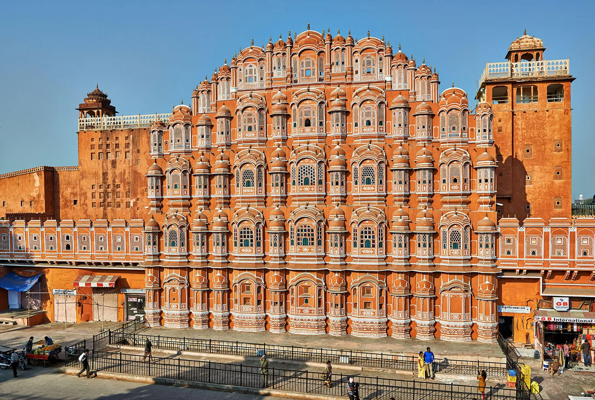
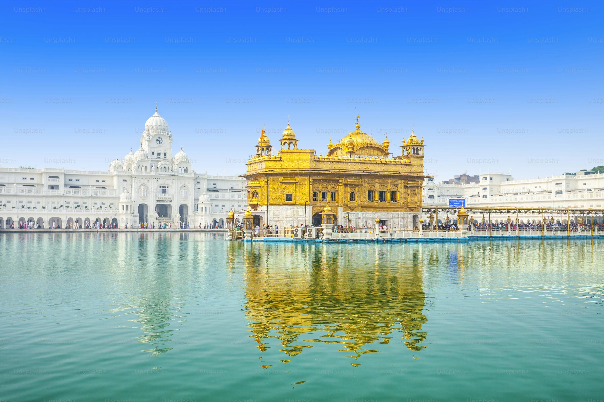

Ancient landmarks and their fascinating stories.
Gateway Of India,Mumbai

The Gateway of India is an iconic arch-monument located in Mumbai, Maharashtra, overlooking the Arabian Sea. Built in 1924, it was constructed to commemorate the visit of King George V and Queen Mary to India in 1911. Designed in the Indo-Saracenic style by architect George Wittet, it stands as a symbol of India's rich colonial history and architectural heritage. The monument is made of basalt, rising to a height of 26 meters, and has become a popular tourist attraction and a cultural symbol of Mumbai. Its location near the Taj Mahal Palace Hotel further enhances its significance as a must-visit destination.
Click Here to visit
Eiffel Tower,Paris

The Eiffel Tower, located in Paris, France, is a globally recognized symbol of French culture and architectural brilliance. Built in 1889 by Gustave Eiffel for the World's Fair, it stands 330 meters tall and was initially criticized but later became a beloved landmark. Constructed from wrought iron, the tower showcases remarkable engineering, with its intricate lattice design offering both strength and aesthetic appeal. It features three levels accessible to visitors, including observation decks with stunning panoramic views of Paris. Illuminated at night, the Eiffel Tower embodies romance and innovation, attracting millions of visitors annually.
Click Here to visit
Leaning Tower Of Pisa,Italy
The Leaning Tower of Pisa, located in Pisa, Italy, is a globally renowned architectural marvel known for its unintended tilt. Constructed as the freestanding bell tower for the city's cathedral, its construction began in 1173 and spanned nearly 200 years. The tower leans due to a soft foundation of clay and sand, which caused it to tilt during its early stages of construction. Standing at approximately 56 meters tall, the tower's unique angle has made it a popular tourist attraction and a symbol of architectural perseverance. Despite its tilt, restoration efforts have stabilized the structure, ensuring its place as an enduring icon of Italy's rich cultural heritage.
Click Here to visit
Hawa Mahal,Jaipur
Hawa Mahal, located in Jaipur, Rajasthan, is an iconic five-story palace built in 1799 by Maharaja Sawai Pratap Singh. Designed in the shape of Lord Krishna's crown, it is crafted from red and pink sandstone, showcasing stunning Rajput architecture. Known as the "Palace of Winds," it features 953 intricately carved jharokhas (small windows) that allow cool breezes to flow through, providing natural ventilation and a view of the bustling streets below. The palace was designed for royal women to observe city life without being seen, reflecting the era's cultural norms. Today, it stands as a symbol of Jaipur’s rich heritage and architectural grandeur.
Click Here to visit
Great Wall Of China

The Great Wall of China is a monumental structure stretching over 21,000 kilometers across northern China, built to protect ancient Chinese states from invasions and raids. Construction began as early as the 7th century BCE, with significant expansions during the Ming Dynasty (1368–1644). Made from stone, brick, tamped earth, and wood, the wall winds through rugged mountains, deserts, and plains, showcasing remarkable engineering and human effort. It includes watchtowers, barracks, and fortifications, symbolizing China's historical strength and ingenuity. Recognized as a UNESCO World Heritage Site, it is one of the most iconic and visited landmarks in the world.
Click Here to visit
Ajanta Caves,Maharashtra India

The Ajanta Caves, located in Maharashtra, India, are a UNESCO World Heritage Site renowned for their exquisite rock-cut architecture, sculptures, and paintings. Dating back to the 2nd century BCE to the 6th century CE, these 30 caves were created as a sanctuary for Buddhist monks and serve as a testament to India's ancient art and spirituality. The murals and frescoes depict scenes from the life of Buddha and Jataka tales, showcasing remarkable artistic skill and storytelling. Carved into a horseshoe-shaped cliff overlooking the Waghora River, the Ajanta Caves remain a symbol of India's rich cultural and religious heritage.
Click Here to visit
Jal Mahal,Jaipur
Jal Mahal, meaning "Water Palace," is a stunning architectural marvel located in the middle of Man Sagar Lake in Jaipur, Rajasthan. Built in the 18th century by Maharaja Madho Singh I as a hunting lodge and summer retreat, this five-story structure showcases a blend of Rajput and Mughal architectural styles. Four of its floors remain submerged underwater when the lake is full, giving it a mesmerizing floating appearance. Made of red sandstone, the palace is adorned with intricately designed chhatris (domed pavilions) and terraces. Surrounded by the Aravalli hills, Jal Mahal is a serene and picturesque symbol of Jaipur's royal heritage.
Click Here to visit
Sanchi Stupa,Sanchi

The Sanchi Stupa, located in Madhya Pradesh, India, is one of the oldest stone structures in the country and a UNESCO World Heritage Site. Built by Emperor Ashoka in the 3rd century BCE, it is a hemispherical dome that enshrines sacred Buddhist relics, symbolizing the path to enlightenment. The stupa is surrounded by intricately carved gateways, known as toranas, depicting scenes from Buddha's life and Jataka tales. A masterpiece of Mauryan architecture, it reflects the spread of Buddhism and Ashoka's devotion to the dharma. The Sanchi Stupa stands as a symbol of peace, spirituality, and India's ancient architectural brilliance.
Click Here to visit
Palace Of Versailles,France

The Palace of Versailles, located near Paris, France, is a magnificent symbol of royal grandeur and French Baroque architecture. Originally a hunting lodge, it was transformed by King Louis XIV in the 17th century into an opulent palace, serving as the royal residence and the seat of political power until the French Revolution. The palace is renowned for its lavish interiors, including the Hall of Mirrors, ornate gardens, and exquisite artworks that reflect the glory of the French monarchy. Spread over 2,000 acres, it features fountains, sculptures, and manicured lawns, making it a UNESCO World Heritage Site and one of the most visited landmarks in the world.
Click Here to visit
Golden Temple,Amritsar
The Golden Temple, also known as Harmandir Sahib, is a sacred Sikh gurdwara located in Amritsar, Punjab, India. It is one of the holiest sites in Sikhism, renowned for its stunning architecture and serene beauty. The temple's upper floors are covered in gold leaf, giving it its iconic golden appearance, while the surrounding Amrit Sarovar (holy tank) adds to its spiritual significance. Built in the late 16th century by Guru Arjan, the Golden Temple attracts millions of visitors annually, offering a place of worship, peace, and reflection. Its teachings of equality, humility, and service are central to Sikh philosophy, and the temple continues to be a symbol of unity and devotion.